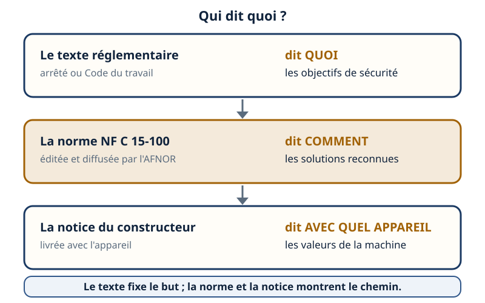
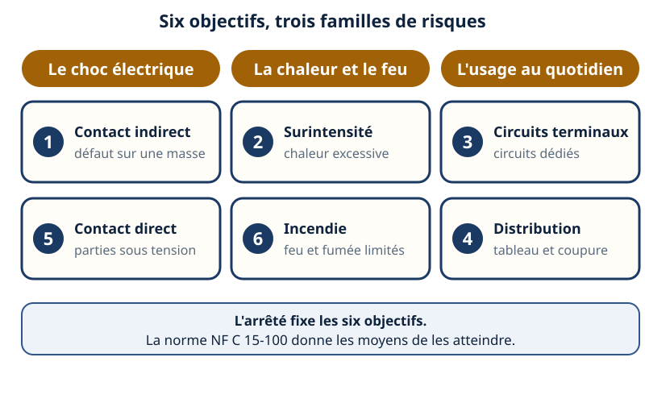
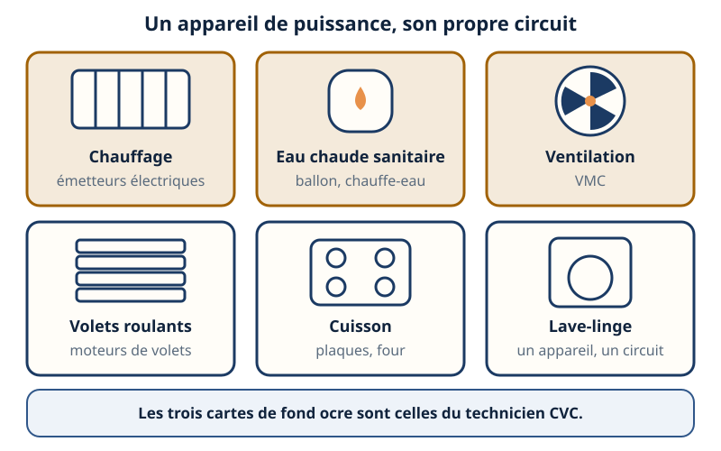
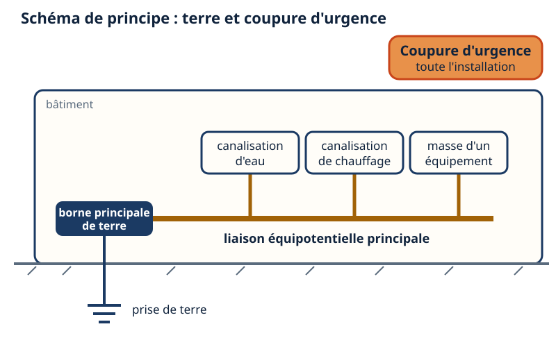

NF C 15-100 — la norme des installations basse tension
Mini-station commentée · 8 écrans et 4 questions · environ 10 minutes
Objectif
À la fin de la station, vous savez dire ce qu'est la NF C 15-100 et quel est son statut réel : une norme, rendue quasi incontournable par les textes, mais qui n'est pas la loi. Vous savez lire ses six objectifs de sécurité, la logique d'un tableau et de ses circuits spécialisés, ce que vous transmettez à l'électricien pour alimenter une pompe à chaleur, un groupe ou une centrale de traitement d'air, et où intervient le Consuel.
Référentiel : TP TECVC, REAC TP-00133 — compétences CP6 (chauffage et eau chaude sanitaire), CP9 (climatisation) et CP10 (centrale de traitement d'air), pour la partie « alimentation électrique des équipements étudiés ».
Chaque écran peut être expliqué à voix haute : le bouton « Écouter » commente ce que vous voyez. Rien n'est dit qui ne soit aussi écrit.
1 / 12
Écran 1 sur 8
Un texte, une norme, une notice
La NF C 15-100 s'intitule « Installations électriques à basse tension ». C'est une norme : un document de référence élaboré dans le cadre de l'AFNOR (Association française de normalisation) et diffusé par AFNOR Éditions. Elle est payante : ce que vous lisez ici s'appuie sur les textes réglementaires publics et sur les guides d'application, jamais sur une copie de la norme.
Trois niveaux à ne pas confondre :
le texte réglementaire (arrêté, Code du travail) dit quoi : les objectifs de sécurité ;
la norme dit comment : les solutions reconnues pour les atteindre ;
la notice du constructeur dit avec quel appareil : intensité, protection, exigences de la machine.

Le texte fixe le but ; la norme et la notice montrent le chemin.
Écran 2 sur 8
Son statut : une présomption, pas une loi
On lit souvent que la NF C 15-100 est « obligatoire ». C'est un raccourci. Trois portes réglementaires y renvoient :
Logement neuf — l'arrêté du 3 août 2016 fixe six objectifs de sécurité. Les installations conçues et réalisées selon la norme (titre 10, édition de 2002, mise à jour de 2005, amendements A1 à A5) sont présumées conformes ; une autre norme équivalente est admise si elle atteint le même niveau de sécurité. Il s'applique aux permis de construire ou déclarations préalables postérieurs au 1er septembre 2016 et a abrogé l'arrêté du 22 octobre 1969, qui imposait la norme en entier ;
Lieux de travail — le Code du travail (articles R. 4215-14 et R. 4215-15) et l'arrêté du 19 avril 2012, qui cite la NF C 15-100 : une installation réalisée conformément à la norme est réputée satisfaire aux prescriptions du chapitre ;
Mise en service — l'attestation de conformité et le Consuel (écran 8).
Ce que ça change pour vous : suivre la norme est la ligne de défense la plus sûre ; s'en écarter oblige à démontrer l'équivalence. Et l'édition citée par un texte n'est pas forcément la dernière : vérifiez toujours quelle version s'applique à votre chantier (date du permis, du marché).

Trait plein : la voie de la présomption. Trait tireté : celle de la démonstration.
Écran 3 sur 8
Les grands principes : protéger les personnes, les biens, l'installation
L'arrêté du 3 août 2016 pose six règles fondamentales. Regroupées par risque :
Le choc électrique — (1) contacts indirects : prise de terre, liaison équipotentielle, coupure automatique ; (5) contacts directs : aucune partie active dangereuse accessible ;
La chaleur et le feu — (2) protection contre les surintensités ; (6) limitation des risques d'incendie et de propagation du feu et de la fumée ;
L'usage au quotidien — (3) sécurité des circuits terminaux, avec des circuits dédiés à certains matériels ; (4) distribution organisée et sécurisée.
Le regroupement par familles est une aide de lecture ; les six numéros sont ceux de l'arrêté. Il vise les logements neufs : pour un local de travail, c'est le Code du travail qui pose le cadre, avec la même norme comme référence.

Six objectifs numérotés comme dans l'arrêté, rangés par famille de risque.
Écran 4 sur 8
La logique du tableau : un départ, une protection
Selon l'arrêté, la distribution est organisée et sécurisée : un emplacement réservé regroupe les arrivées des circuits de puissance et le tableau de répartition. Ce tableau porte :
un sectionnement à l'origine de chaque circuit ;
une protection contre les surintensités adaptée à chaque circuit ;
des protections complémentaires contre les contacts directs : dans un logement, tous les circuits terminaux sont protégés par des dispositifs différentiels à haute sensibilité au plus égale à 30 mA ;
un parafoudre, le cas échéant ;
des circuits, appareillages et canalisations repérés et identifiés ;
une coupure d'urgence, facilement accessible, qui coupe toute l'installation en cas de danger de choc ou d'incendie.
La logique : un défaut ne doit priver que le circuit concerné, pas tout le bâtiment. Le repérage sert à vous et à l'électricien : un circuit non identifié ne se consigne pas proprement.

Regardez le circuit chauffage : seul son départ s'ouvre.
Écran 5 sur 8
Les circuits spécialisés : un appareil de puissance, un circuit
L'arrêté impose que l'installation comporte des circuits spécifiques dédiés à l'alimentation de matériels spécifiques, pour permettre leur utilisation optimale. Dans les guides professionnels, on retrouve en circuits dédiés : le chauffage électrique, l'eau chaude sanitaire (ballon thermodynamique compris), la ventilation mécanique contrôlée, les volets roulants, la cuisson, le lave-linge…
Pourquoi dédier ? Un appareil de puissance sur un circuit partagé impose une protection mal adaptée à l'un ou à l'autre, et une panne prive l'utilisateur de tout le circuit.
Ce que cette station ne donne pas : les sections de conducteurs et les calibres de protection par type de circuit. Ils se lisent dans la norme et dans les guides d'application des fabricants ; ils évoluent avec les amendements.

Fond ocre : les trois familles qui concernent directement le CVC.
Écran 6 sur 8
Alimenter une PAC, un groupe, une CTA : ce que vous transmettez
Pour chaque équipement que vous étudiez (pompe à chaleur, groupe frigorifique, centrale de traitement d'air), votre fiche d'alimentation au lot électricité précise :
un circuit dédié à l'équipement ;
la puissance, l'intensité maximale et la protection préconisée, lues sur la notice et la plaque signalétique du constructeur ;
le type de protection différentielle exigé par la notice ; dans un logement, les circuits terminaux sont protégés par différentiel à haute sensibilité (écran 4) ;
le repérage du circuit au tableau, et son sectionnement à l'origine ;
le raccordement de la masse de l'équipement au conducteur de protection (écran 7).
Le câblage et le dimensionnement des conducteurs restent l'affaire de l'installateur électricien, qui applique la norme. Votre travail : lui donner les bonnes données d'entrée, puis contrôler que la pose y correspond.

Deux équipements, deux lignes qui ne se rejoignent jamais.
Écran 7 sur 8
Terre, liaison équipotentielle, coupure d'urgence
Pour la protection contre les contacts indirects, l'arrêté exige dans chaque logement et dans les parties communes :
une prise de terre et une installation de mise à la terre : conducteurs de terre, borne principale de terre, conducteur principal de protection, conducteurs de protection ;
une liaison équipotentielle principale, à laquelle sont raccordés la borne principale de terre et les éléments conducteurs du bâtiment ;
des dispositifs de coupure automatique adaptés au schéma de liaison à la terre (station « Régimes de neutre ») ;
une liaison équipotentielle supplémentaire dans chaque local contenant une baignoire ou une douche.
Pour le technicien CVC : la masse d'une PAC, d'un groupe ou d'une CTA se raccorde au conducteur de protection ; les canalisations métalliques d'eau ou de chauffage sont des éléments conducteurs à considérer dans la liaison équipotentielle. Quant à la coupure d'urgence, elle agit sur l'ensemble de l'installation : elle ne remplace ni le sectionnement de chaque circuit, ni la consignation avant intervention (station « Consigner »).

Schéma de principe : la liaison équipotentielle réunit les éléments métalliques du bâtiment.
Écran 8 sur 8
Le Consuel, et le bilan
Le Consuel (Comité national pour la sécurité des usagers de l'électricité) est agréé pour viser les attestations de conformité des installations électriques intérieures. La base : le décret n° 72-1120 du 14 décembre 1972 modifié, l'arrêté du 17 octobre 1973, et aujourd'hui les articles D. 342-18 à D. 342-21 du Code de l'énergie. L'attestation est établie par l'installateur (ou par le maître d'ouvrage s'il a réalisé ou fait exécuter les travaux sous sa responsabilité), puis visée par le Consuel. Elle est exigée avant la première mise sous tension d'une installation neuve. Pour un usage non domestique (locaux recevant des travailleurs ou du public, parties communes d'immeubles d'habitation), le formulaire est l'attestation verte.
Le bilan :
La NF C 15-100 est une norme : les textes la rendent quasi incontournable par une présomption de conformité, pas par la loi.
Six objectifs : choc, chaleur et feu, usage au quotidien.
Un tableau : un sectionnement et une protection par circuit, une coupure d'urgence.
Une PAC, un groupe, une CTA : un circuit dédié, protection lue sur la notice.
Avant la mise en service : l'attestation de conformité, au planning.
Le réflexe : la norme fixe la méthode, la notice fixe les valeurs de l'appareil.

L'attestation se prévoit au planning, avant la date de mise en service.
Question 1 sur 4
Depuis 2016, quel est le statut de la NF C 15-100 pour un logement neuf ?
Rappel de l'écran 2 — deux chemins, les mêmes objectifs.
Question 2 sur 4
Que doit comporter le tableau pour chaque circuit ?
Rappel de l'écran 4 — un départ, une protection.
Question 3 sur 4
Vous étudiez l'alimentation d'une pompe à chaleur : que transmettez-vous à l'électricien ?
Rappel de l'écran 6 — un équipement, son propre circuit.
Question 4 sur 4
Qui établit l'attestation de conformité, et quand est-elle exigée ?
Rappel de l'écran 8 — l'attestation précède la mise sous tension.
Les correspondances de la station
Terre & différentiel (même sous-ligne)
— comment le différentiel à haute sensibilité protège les personnes, vu de près.
Protéger un circuit (même sous-ligne)
— sections et calibres : la suite logique des circuits spécialisés.
Régimes de neutre (même sous-ligne)
— la coupure automatique dépend du schéma de liaison à la terre.
Les neuf principes de prévention (autre sous-ligne : Risques professionnels)
— le risque électrique se prévient d'abord à la conception.
Pour la technologie des composants (sectionneur, disjoncteur, différentiel, terre), le réseau voisin
ÉlectroRézo les explique un par un. Pour intervenir sur une
installation, voyez aussi L'habilitation et Consigner.